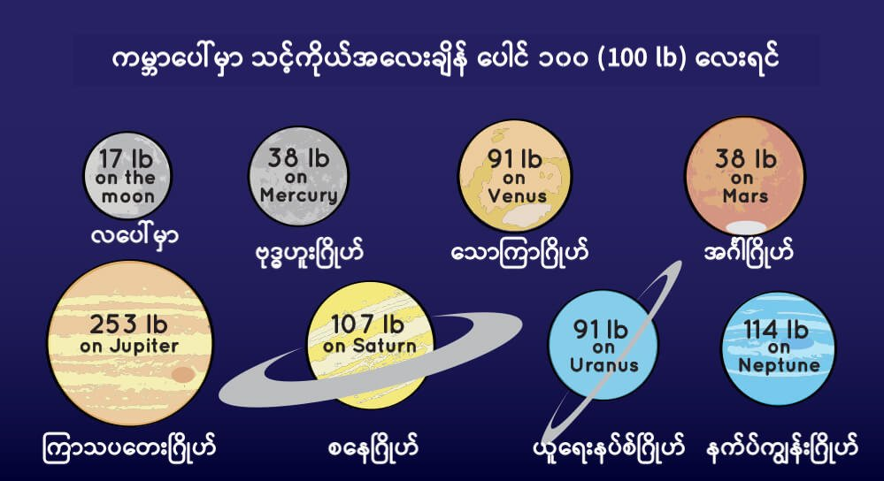
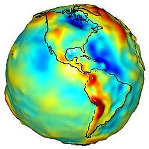

ဒီ Gravity ခေါ် ဆွဲငင်အား ဟာ ဂလက်ဆီ တွေထဲက ကြယ်တွေ စုစု စည်းစည်း ဖြစ်နေအောင် လုပ်ပေးထားတဲ့ အား ဖြစ်ပါတယ်။ ဒီလိုပဲ ဂြိုဟ်တွေ ကို ကြယ်တွေ ပတ်လည်မှာ ပတ်နေအောင်၊ လတွေ က ဂြိုဟ်တွေကို ပတ်နေအောင် ဆွဲထား ပေးတာကလဲ ဒီ ဆွဲငင်အား ပါပဲ။
ကမ္ဘာပေါ်မှာ ရှိတဲ့ လူတစ်ယောက် ခုန် လိုက်ရင် ဘာလို့ အာကာသထဲ လွင့်ထွက် မသွားပဲ မြေပြင်ပေါ်ကို ပြန်ကျလာ ရတာလဲ။ ပစ္စည်းတွေကို အပေါ်ကို ပစ် တင်လိုက်ရင် ဘာလို့ ပြန်ကျလာ တာလဲ။
အဖြေကတော့ “ဆွဲငင်အား” ပဲ ဖြစ်ပါတယ်။ အဲ့သည် အရာဝတ္ထု အချင်းချင်း ဆွဲတဲ့ မမြင်ရတဲ့ အား တစ်မျိုးပေါ့။ ခုန်လိုက်ရင် ပြန်ပြုတ်ကျ လာတာ၊ ပစ္စည်းတွေ မြှောက်တင်လိုက်ရင် ပြန်ကျလာ တာက ဒီ Gravity ကြောင့်ပဲ ဖြစ်ပါတယ်။
ဒြပ်ထု (Mass) ရှိတဲ့ အရာ မှတ်သမျှမှာ ဆွဲငင်အား ရှိပါတယ်။ ဒြပ်ထု ကြီးလေလေ ဆွဲငင်အား များလေလေ ဖြစ်ပါတယ်။ နောက်ပြီး ဆွဲငင်အားက အကွာအဝေး ကိုလိုက်ပြီး အားနည်း သွားပါတယ်။ ဝေးလေလေ ဆွဲငင်အား နည်းသွားလေလေ ဖြစ်ပါတယ်။ တနည်း ပြန်တွေးကြည့်ရင် အရာဝတ္ထု နှစ်ခုဟာ တစ်ခုနဲ့ တစ်ခု နီးလေလေ သူတို့ နှစ်ခု ကြားက ဆွဲငင်အားကလဲ ကြီးလာလေလေ ဖြစ်ပါတယ်။
ကမ္ဘာ့ မြေဆွဲအားက သူ့မှာ ရှိတဲ့ ဒြပ်ထု အားလုံး ပေါင်းကြောင့် ဖြစ်လာတာပါ။ သူ့မှာ ပါဝင်တဲ့ ဒြပ်ထု အားလုံး ပေါင်းစပ်ပြီး ဆွဲငင်အား ရပ်ဝန်း တစ်ခု ဖြစ်လာတာပါ။ ဒီလို ဆွဲငင်အားဒါဏ် ခံရတဲ့ အတွက် ကျွန်တော်တို့ ကမ္ဘာပေါ်က လူတွေ၊ သတ္တဝါ တွေနဲ့ အရာ ဝတ္ထုတွေမှာ “အလေးချိန် (Weight)” ဆိုတာ ပေါ်လာတာ ဖြစ်ပါတယ်။
အကယ်၍ ကျွန်တော်တို့သာ ကမ္ဘာထက် ဒြပ်ထု သေးငယ်တဲ့ ဂြိုဟ်တစ်ခုပေါ် ရောက်သွားခဲ့ရင် ကျွန်တော်တို့ရဲ့ အလေးချိန်ကရော ဘယ်လို နေမလဲ။ အလေးချိန် မပြောင်းပဲ ဒီအတိုင်း ဆက်ရှိနေမှာလား။ ပိုလေး လာမှာလား။ ဒါမှမဟုတ် ပေ့ါသွား မလား။
ဆွဲငင်အားက ဒြပ်ထုနဲ့ တိုက်ရိုက် အချိုးကျ တယ်လို့ အပေါ်မှာ ပြောခဲ့ ပြီးပါပြီ။ ဒီတော့ ကမ္ဘာထက် ဒြပ်ထု သေးတဲ့ ဂြိုဟ် ပေါ်မှာဆို အလေးချိန်က လျှော့သွားမှာ ဖြစ်ပြီး ကမ္ဘာထက် ဒြပ်ထုများတဲ့ ဂြိုဟ်ပေါ် ရောက်သွားရင်တော့ ပိုလေးလာမှာ ဖြစ်ပါတယ်။ ဒီလို အလေးချိန် ပြောင်းသွား ပေမယ့်လည်း ကျွန်တော်တို့ရဲ့ ဒြပ်ထု (Mass) ကတော့ အပြောင်းအလဲ ရှိမှာ မဟုတ်ပါဘူး။
ကမ္ဘာကြီးပေါ် ကျွန်တော်တို့ ရပ်နေတုန်းမှာ ကမ္ဘာက သက်ရောက်တဲ့ ဆွဲငင်အားနဲ့ ထပ်တူညီတဲ့ ဆွဲငင်အားနဲ့ ကျွန်တော် တို့ကလဲ ကမ္ဘာကို ပြန်ဆွဲ နေပါတယ်။ (နယူတန်ရဲ့ Action-Reaction က ဒါကို ရှင်းပြ ထားပါတယ်။) ဒါပေမယ့် ကျွန်တော်တို့က ကမ္ဘာအပေါ် ပြန်ပြီး သက်ရောက်တဲ့ ဆွဲငင်အားက ဘာမှ ပြောပလောက်တဲ့ ပမာဏတော့ မဟုတ်ပါဘူး။
အိုင်းစတိုင်းရဲ့ နှိုင်းယှဉ်ခြင်း သီအိုရီ (General Theory of Relativity) အရ ဆိုရင်တော့ Gravity ဆိုတာဟာ ဒြပ်ထုကြောင့် အာကာသ နဲ့ အချိန် (space-time) တွေ ကွေးသွား ပြီး ဖြစ်လာတာ လို့ ဆိုပါတယ်။ ဒီလို အာကာသ ကွေးသွားတဲ့ အတွက် ဒြပ်ရှိတဲ့ အရာတွေ နဲ့ အလင်း ဟာဒီ အကွေး အတိုင်း လိုက်သွား ပြီး ဆွဲငင်အား ဖြစ်လာတာ လို့ ဆိုပါတယ်။

စကြာဝဠာထဲကဆွဲငင်အား
နေရဲ့ ပတ်လည်မှာ လှည့်ပတ်နေတဲ့ ဂြိုဟ်တွေ အာကာသ ထဲကို လွင့်ထွက် မသွားအောင် ဆွဲထိန်း ထားတာက နေရဲ့ ဆွဲငင်အား ကြောင့်ပါ။ တခါ ကမ္ဘာကို ပတ်နေတဲ့ လ လွင့်ထွက် မသွားအောင် ဆွဲထိန်း ထားတာကလဲ ကမ္ဘာရဲ့ ဆွဲငင်အား ကြောင့်ပါပဲ။ လရဲ့ ဆွဲအားက ကမ္ဘာပေါ် သက်ရောက်ပြန်တော့ တခါ ဒီရေ အတက်အကျကို ဖြစ်စေ ပြန်ပါတယ်။ဆွဲငင်အား ကြောင့်ပဲ ဓါတ်ငွေ့ တိမ်တိုက်တွေဟာ ကျစ်ကျစ်လစ်လစ် သိပ်သိပ်သည်းသည်း စုစည်းမိပြီး ကြယ်တွေ ဖြစ်လာတာပါ။ တခါ ကြယ်ဖြစ်ပြီး ကြွင်းကျန် ရစ်ခဲ့တဲ့ ဓါတ်ငွေ့ တွေနဲ့ ဖုန်မှုန့်တွေ စုမိပြီး ဂြိုဟ်တွေ ဖြစ်လာကြ ပြန်ပါတယ်။
ဆွဲငင်အားက ဒြပ်ရှိတဲ့ အရာဝတ္ထုတွေ ကိုတင် ဆွဲငင်တာ မဟုတ်ပါဘူး။ ဒြပ်မရှိတဲ့ အလင်းကိုလဲ ဆွဲပါတယ်။ ဒါကို အိုင်းစတိုင်းက စတင်ပြီး ရှာဖွေ တွေ့ရှိခဲ့တာပါ။ အကယ်လို့ အားကောင်းတဲ့ ဓါတ်မီး တစ်ချောင်းကို ကမ္ဘာပေါ် ကနေ အပေါ်ကို ထောင်ပြီး ထိုးလိုက်မယ် ဆိုရင် ဒီ ဓါတ်မီးရဲ့ အရောင်ဟာ ကမ္ဘာမြေရဲ့ ဆွဲအားကြောင့် လှိုင်းအလျှား ရှည်ထွက်လာပြီး အနီရောင် ဖက်ကို ပြောင်းသွားပါ လိမ့်မယ်။ ဒါကို မျက်စေ့နဲ့ မမြင်ရပေမယ့် သိပ္ပံ စမ်းသပ်မှု တွေနဲ့ သက်သေ ပြနိုင်ခဲ့ပြီး ဖြစ်ပါတယ်။
ဆွဲငင်အား ကြောင့်ပဲ Black Hole တွင်းနက်တွေ ဖြစ်လာရတာပါ။ နေထက် အဆပေါင်း များစွာ ပိုကြီးတဲ့ ကြယ်ကြီးတွေ သေသွားတဲ့ အခါကျရင် ဆူပါနိုဗာ ပေါက်ကွဲမှုကြီး ဖြစ်ပြီး တွင်းနက် အဖြစ် ပြောင်းသွားမှာ ဖြစ်ပါတယ်။ ဆူပါနိုဗာ ပေါက်ကွဲမှုကြီး အပြီး ကြွင်းကျန် ရစ်ခဲ့တဲ့ ဓါတ်ငွေ့တွေဟာ ဆွဲငင်အား ကြောင့်ပဲ အလွန် သိပ်သည်းသွားပြီး တွင်းနက် အဖြစ် ကူးပြောင်းသွားတာ ဖြစ်ပါတယ်။
ဒီ တွင်းနက် Black Hole တွေရဲ့ ဆွဲငင်အားဟာ အလွန် အင်မတန် ကြီးမားလွန်း တာမို့ ဒီ တွင်းနက်တွေထဲ ဝင်သွားတဲ့ အရာ မှန်သမျှ ဘာမှ ပြန်မထွက်နိုင် တော့ပါဘူး။ နောက်ဆုံး အလင်းတောင် ပြန် မထွက်နိုင် တော့ပါဘူး။
ကမ္ဘာပေါ်ကဆွဲငင်အား
ကျွန်တော်တို့ အတွက်တော့ ကမ္ဘာရဲ့ မြေဆွဲငင်အား က အလွန် အရေးကြီးပါတယ်။ ဆွဲငင်အားသာ မရှိခဲ့ရင် ကမ္ဘာပေါ်မှာ လူသား တွေနဲ့ အခြား သက်ရှိတွေလဲ ပေါ်ပေါက်လာ စရာ အကြောင်း မရှိပါဘူး။နေရဲ့ ဆွဲအားက ကမ္ဘာကို လက်ရှိ လမ်းကြောင်းကနေ လွတ်ထွက် မသွားအောင် တားဆီးပေးထား ပါတယ်။ နေ ကို ကမ္ဘာက ပတ်နေတဲ့ လမ်းကြောင်းဟာ ပြောရရင်တော့ အလွန်ကို နေထိုင် ချင်စဖွယ် ကောင်းတဲ့ ပတ်ဝန်းကျင်ပဲ ဖြစ်ပါတယ်။ ရာသီဥတု သမ မျှတ တဲ့အတွက် သက်ရှိတွေ ရှင်သန် ပေါက်ဖွားဖို့ ကောင်းတဲ့ ပတ်ဝင်းကျင်ပါ။
ကမ္ဘာကြီးရဲ့ မြေဆွဲအားက ကမ္ဘာ့လေထုကို အာကာသထဲ လွင့်ထွက် မသွားအောင် တားဆီးပေး ထားတာပါ။ ပြောရရင်တော့ မြေဆွဲအား မရှိတဲ့ ကမ္ဘာဆိုတာ စဉ်းစားကြည့်လို့တောင် မရနိုင်ပါဘူး။
ဒါပေမယ့် ကမ္ဘာပေါ်မှာ မြေဆွဲအားဟာ နေရာ ဒေသ အားလုံးအတွက် တသမတ်ထဲ ရှိနေတာတော့ မဟုတ်ပါဘူး။ ကမ္ဘာမြေအောက်မှာ ဒြပ်ထု ပိုများတဲ့ အရပ်တွေမှာ ဆွဲငင်အား ပိုများပြီး မြေအောက် ဒြပ်ထု နည်းတဲ့ အရပ်တွေမှာတော့ မြေဆွဲအား နည်းနည်းလေး မဆိုစလောက် လျှော့နည်းပါတယ်။
နာဆာ အဖွဲ့ကြီးက ဂြိုဟ်တု နှစ်စင်းကို အသုံးပြုပြီး ကမ္ဘာ့ မြေဆွဲအား ကို တိုင်းတာ ခဲ့ပါတယ်။ ရရှိလာတဲ့ ကမ္ဘာ့ မြေဆွဲအားပြ မြေပုံကို အောက်မှာ ဖော်ပြ ထားပါတယ်။ အပြာရောင်က မြေဆွဲအား အနည်းငယ် လျှော့နည်းတဲ့ ဒေသတွေ ဖြစ်ပြီး အနီရောင် ကတော့ မြေဆွဲအား ပိုအားကောင်းတဲ့ ဒေသတွေ ဖြစ်ကြပါတယ်။
